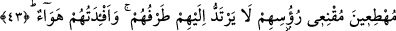

hitâbı gibi.
Aynı zamanda şu da bildirilmiş olmaktadır: Allah’ı habersiz sanmak kaçınılması o
kadar gerekli bir husustur ki böyle bir zanda bulunması mümkün olmayan Hz.
Peygamber (s.a.)’e bile yasaklanmıştır. Yâni Allah Teâlâ’yı zâlimlerin yaptıklarından
habersiz sanmama hâline devam et! Müstehak oldukları o can yakıcı azap erteleniyor
diye de üzülme.
“Ancak, Allah onları (cezalandırmayı), korkudan gözlerin dışarı fırlayacağı”
hesaplarının görülmesini bekleyenlerin (ehl-i mevkıf) gözlerinin dikildiği, gördükleri
şeyin dehşetinden dolayı göz kapaklarının donakaldığı “bir güne erteliyor.” Bu cümle
niçin öyle sanmaması gerektiğini açıklıyor. Yâni, Allah onlara vereceği azâbı bu
evsâftaki korkunç bir gün için erteliyor.
Cenab-ı Hak burada, azâbı geciktirmesinin onların yaptıklarından habersiz olduğu ya
da onları ihmâl ettiği için değil, daha şiddetli ve daha büyük bir azâba dûçar etmek için
ertelediğini belirtiyor.
Âyetin işârî yorumu ise şöyledir: “Sakın,
Allah’ı
zâlimlerin”
bugün
“yaptıklarından” ezelde “habersiz sanma!” Yâni zâlimlerin yaptığı hiçbir şeyden
Allah ezelde habersiz değildi. Aksine yaptıklarının tamamı O’nun eşsiz hikmetinden
ötürü kazâ, kader ve irâdesiyle olmaktadır.
Allah Teâlâ, saâdet ehlinin saâdetini, şakâvet ehlinin de şakâvetini amellerine,
amellerini de ömürlerine yerleştirmiştir. Ta ki her iki grub şer‘î ve tabîî amelleri
vâsıtasıyla kıyâmet günü saîdlerin menzillerinden bir menzile veya şakîlerin
menzillerinden bir menzile ulaşsın. Bu sebeple kendilerini şakîler menziline ulaştıracak
olan günahları daha fazla işlesinler diye Allah zâlimlerin işini ertelemektedir.”
43. Gönülleri bomboş olarak kendilerine bile dönüp bakamaz durumda, başları
göğe dikilmiş bir vaziyette koşarlar.
“Gönülleri” kalbleri, sanki bütün şâgillerden boş olan havanın kendisi gibi hayret ve
dehşetin fazlalığından akıl ve anlayıştan “bomboş olarak kendilerine bile dönüp
bakamaz”; her an yaptıkları gibi göz kapaklarını kapatamaz, hareket ettiremez, gözleri
açık ve kapanmadan donakalmış “durumda,” hiçbir şeye iltifat etmeden dâimî sûrette
bakmak sûretiyle “başları göğe dikilmiş bir vaziyette” tıpkı bir şeyden korkmuş ya da
esir edilmiş birinin koşması gibi korku, zillet ve huşû içerisinde kendilerini çağırana
doğru yönelip “koşarlar.” Yâni kendilerini mahşer meydanına çağıran İsrafil’e doğru
acele ederek koşarlar.
el-Kevâşî’de şöyle der: “Onlar içinde bulundukları o kötü durum sebebiyle
ayaklarının bastığı yere ne dönebilirler ne de bakabilirler!”